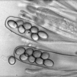
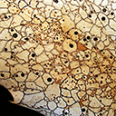
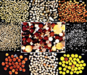
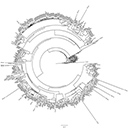
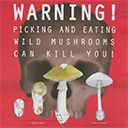

What We Study
|

Dispersal |

Population Biology of Modular Organisms |

Cooperation and Interactions |

Genetic Architecture of Symbiosis |

Invasion Biology & Conservation of Fungi |
AmanitaBASE
Our Amanita collections